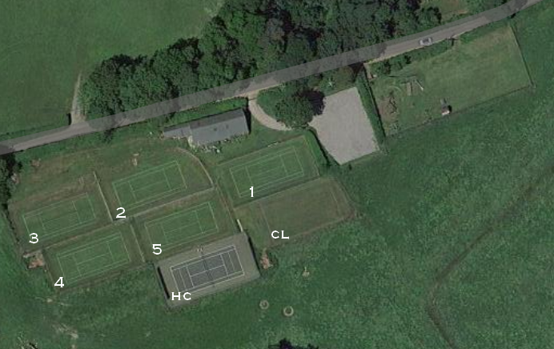
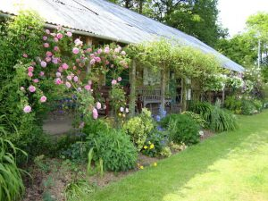

5 grass courts, 1 hard court & 1 croquet lawn.
The grass courts are now closed until next April.
The hard court and the croquet lawn (court 5) need to be booked. Max time 2hr.
A non-member who wishes to play please contact Deirdre Pope at deirdre.pope@some.oxon.org or on 01752 698345. Visitors may play up to three times a year for a fee of £6 without joining.

You may book until right up to the start of the booking period. Courts can be booked in 30 minute increments from 30mins to 2hrs (default remains 1hr).
Of the buttons below GC1 -4 are inoperative and GC5 is being used for croquet lawn bookings.
You may want to view the current bookings first. This opens a new web page; when ready return by clicking on the AVTCC logo.
Traditional clubhouse
